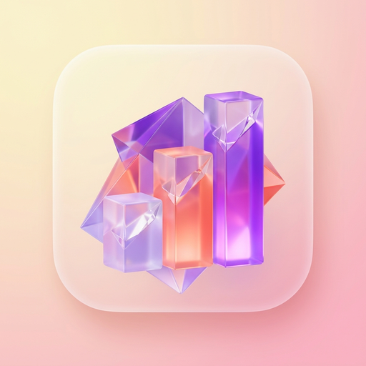

Advanced Executive Business Intelligence for Odoo 19. Combining the modern pastel aesthetics of global SaaS apps with deep, real-time analytics.
Leave rigid default reports behind. Bring in eye-catching, interactive visual dashboards.
Soft color palettes combined with glassmorphism. Monitor your metrics for hours without experiencing eye strain.
Lightning-fast queries straight to your Odoo database without page reloads, ensuring sub-second accuracy.
Automated smart alerts that highlight critical performance points (e.g., CRM opportunities ready to close).
A smart toolbar featuring instant filters, presentation mode, and real-time data updates.
Automatically calculate trend comparisons (vs Last Month, YoY) with just one click on the month, week, or year capsule.
Switch to fullscreen view without distracting Odoo menus. Perfect for meetings or displaying on office wallboards.
Fetch the latest data instantly without reloading, or enable the auto-refresh interval for up-to-the-minute warehouse monitoring.
Click the star icon to pin a specific dashboard (e.g., CRM Hub) so it opens automatically every time you log in.
Available immediately upon installation. Deeply integrated with Sales, CRM, Stock, MRP, and Invoicing.
Executives don't need to manually log into Odoo every morning. The system will compile and send performance reports to their inbox automatically.
Easily manage dashboard ownership, tweak auto-refresh intervals, and arrange widgets to perfectly fit your team's workflow.
This module is written with a 100% PEP 8 Compliant structure and runs natively on the Odoo 19 OWL framework. Experience fast, lightweight performance that never overloads your database server.